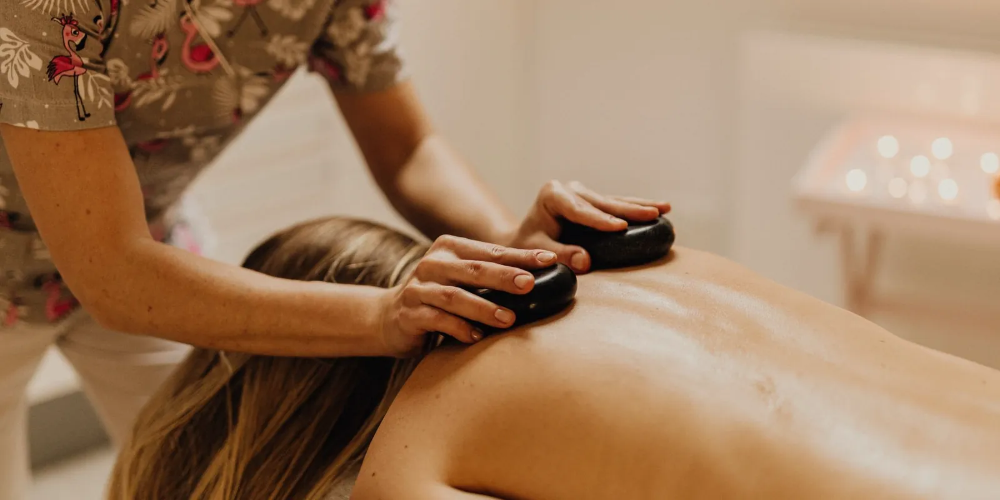

Cuidado de piernas de pie: guía para tu jornada laboral
Pasar tu turno completo de pie —en salud, docencia, comercio o gastronomía— puede pasarle factura a tus piernas. Te contamos por qué la bipedestación prolongada afecta la circulación y qué medidas prácticas pueden ayudarte a sentirte mejor al final del día.

Si tu trabajo te exige estar de pie durante horas —en un mostrador, un quirófano, un salón de clases o una cocina— seguramente conoces esa sensación de piernas pesadas y cansadas al terminar el turno. El cuidado de piernas de pie no es un lujo ni una exageración: pasar tanto tiempo parada cambia la forma en que la sangre circula por tus piernas y, con el paso de los días, puede favorecer la hinchazón, la pesadez y las várices. Aquí te contamos por qué pasa esto y qué puedes hacer, paso a paso, para cuidarte mejor.
¿Por qué estar de pie muchas horas afecta la circulación de tus piernas?
Cuando caminas, los músculos de la pantorrilla se contraen y funcionan como una bomba que empuja la sangre de las venas de tus piernas de vuelta hacia el corazón, en contra de la gravedad. A este mecanismo se le llama bomba muscular de la pantorrilla. El problema aparece cuando te quedas de pie, quieta, durante mucho tiempo: esa bomba casi no se activa, la sangre se va acumulando en la parte baja de las piernas y sube la presión dentro de las venas. Por eso la bipedestación prolongada está reconocida como uno de los factores laborales más asociados a los trastornos venosos crónicos —junto con pasar muchas horas sentada sin moverte— y, con el paso del tiempo, puede favorecer una insuficiencia venosa.
Síntomas que puedes notar al final del día
Si trabajas de pie, seguro te suenan algunas de estas señales al terminar tu jornada:
- Piernas que se sienten pesadas o "cargadas".
- Hinchazón en tobillos y pies, sobre todo hacia la tarde.
- Cansancio o dolor sordo en las pantorrillas.
- Venas más visibles, abultadas o en forma de "arañita".
- Sensación de calor o tirantez en la piel de las piernas.
Estas molestias suelen mejorar con el descanso nocturno, pero si se repiten día tras día o van a más, vale la pena prestarles atención.
¿Quiénes tienen más riesgo?
Trabajar de pie afecta a mucha gente, pero no a todas por igual. El riesgo de que aparezcan várices o molestias circulatorias tiende a ser mayor si, además de pasar tu jornada de pie:
- Tienes antecedentes familiares de várices.
- Eres mujer (el riesgo también aumenta con los embarazos).
- Tienes sobrepeso, lo que añade presión extra sobre las venas de las piernas.
- Fumas.
- Trabajas en profesiones como enfermería, docencia, comercio, gastronomía o salud, donde pasar muchas horas de pie es parte del día a día.
Claves para el cuidado de piernas de pie durante tu turno
Muévete aunque no puedas sentarte
No hace falta salir a caminar: basta con activar la bomba muscular de la pantorrilla sin moverte de tu puesto. Cada 30 minutos, más o menos, intenta:
- Ponerte de puntillas y bajar, varias veces seguidas.
- Cambiar el peso de una pierna a otra.
- Dar unos pasos o caminar en el sitio si el espacio lo permite.
- Flexionar los tobillos hacia arriba y abajo.
Elige bien tu calzado
Un calzado con buen soporte de arco y tacón bajo ayuda a que el pie se apoye de forma natural y no sobrecargue la circulación. Los tacones muy altos —y también los zapatos totalmente planos, sin ningún soporte— pueden dificultar el movimiento natural del pie y, con él, el trabajo de la bomba muscular.
Medias de compresión, si tu profesional de salud las recomienda
Para quienes trabajan de pie, usar medias de compresión durante la jornada puede ayudar a que las venas trabajen mejor y a reducir la sensación de piernas pesadas al final del día. No todas las personas necesitan el mismo nivel de compresión, así que lo ideal es que un profesional te indique cuál es la más adecuada para ti antes de empezar a usarlas.
Hidrátate y cuida lo que comes
Tomar suficiente agua durante el día y moderar el consumo de sal puede ayudar a que tus piernas retengan menos líquido. También evita la ropa muy ajustada en la cintura, las piernas o la ingle, porque puede dificultar el retorno de la sangre hacia el corazón.
Al llegar a casa: eleva tus piernas
Cuando termines tu turno, dedicar unos quince minutos a elevar las piernas por encima del nivel del corazón —por ejemplo, recostada con los pies apoyados en la pared o sobre unos cojines— puede ayudar a que la sangre regrese con más facilidad y a que sientas alivio en las piernas.
No tienes que esperar a que aparezcan las várices para empezar a cuidar tus piernas. Los pequeños cambios en tu jornada —moverte, elegir bien el calzado, hidratarte— son los que marcan la diferencia a largo plazo.
¿Cuándo vale la pena consultar a un especialista?
La mayoría de las veces, la pesadez y la hinchazón que sientes después de un turno largo de pie mejoran con el descanso y con estos hábitos. Pero si la hinchazón no baja al día siguiente, te salen várices que van creciendo o sientes dolor persistente en las piernas, es un buen momento para revisar tu salud vascular con un profesional. Una valoración con eco doppler permite ver cómo está funcionando la circulación de tus venas y, si hace falta, definir contigo qué opciones existen, sin necesidad de cirugía.
Si te identificas con estas señales, puedes agendar una valoración con nuestro equipo o escribirnos por WhatsApp, y revisamos juntas cómo está la circulación de tus piernas.
Preguntas frecuentes
¿Por qué se hinchan las piernas si trabajo de pie?
Al caminar, los músculos de la pantorrilla se contraen y funcionan como una bomba que empuja la sangre de vuelta hacia el corazón. Si permaneces de pie y quieta durante mucho tiempo, esa bomba casi no se activa y la sangre se va acumulando en la parte baja de las piernas.
¿Qué puedo hacer durante mi turno para cuidar mis piernas?
Puedes activar la bomba muscular sin moverte de tu puesto: cada 30 minutos, ponte de puntillas y baja varias veces, cambia el peso de una pierna a otra, camina en el sitio si el espacio lo permite y flexiona los tobillos hacia arriba y abajo. Elegir un calzado adecuado también ayuda.
¿Cuándo debo consultar si paso muchas horas de pie?
Si la hinchazón no baja al día siguiente, si te salen várices que van creciendo o si sientes dolor persistente en las piernas. Una valoración con eco doppler permite ver cómo está funcionando la circulación de tus piernas.